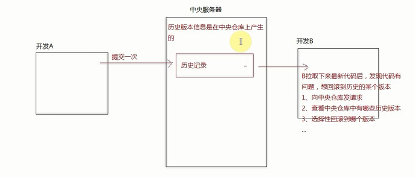
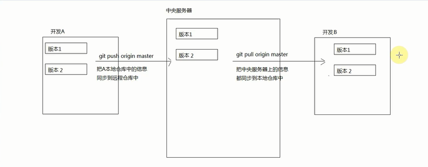
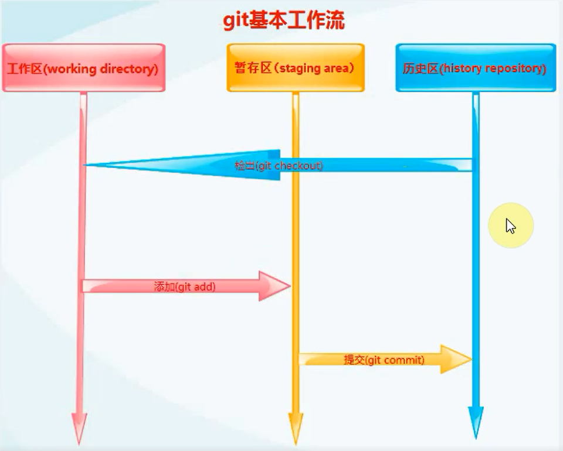
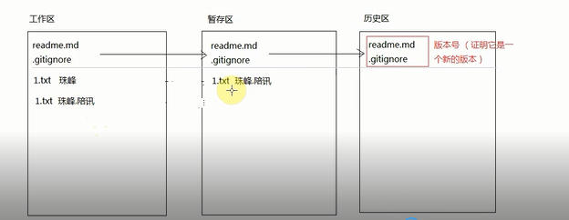
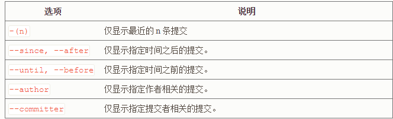
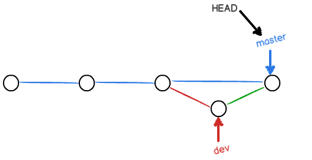
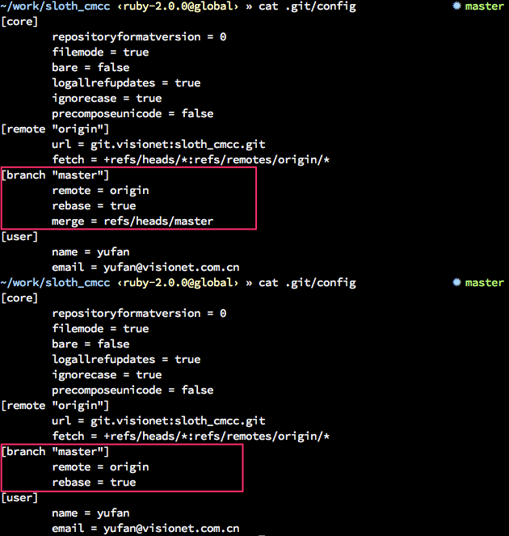
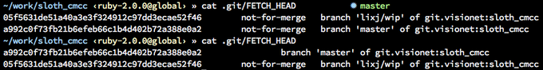

git
GIT基础知识
什么是git?
分布式版本控制系统，它是有Linux（全球比较大的服务器系统） 创始人花费两周时间使用C语言编写的工具（在GIT命令窗口中一般都是执行Linux命令）
什么是版本控制系统？
在没有版本控制系统之前，我们的操作可能会向下面这样：
创建一个word文档，想要编写自己的年终总结，第一天写了一部分，第二天想接着写，但是发现还要吧第一天的内容进行修改，原有的内容就丢失了，以后也找不到了；
本质问题：后面修改的内容会替换原有内容，原有内容没保存，以后想找都找不到
版本控制系统的优势1、备份文件
2、记录历史
3、回到过去
4、多端共享
5、团队协作
常用的版本控制系统
git:分布式版本控制系统
svn:集中式版本控制系统
分布式和集中式的区别？
[集中式]
- 想做历史记录的查看或者备份，必须链接到中央服务器才可以（需要联网）
- 处理速度没有git快
[分布式]
- 每个开发者本地都是单独的仓库，在自己的仓库中就可以完成历史版本的记录和查看（不需要联网）
- 团队开发才需要中央服务器
- GIT处理的速度更快（GIT是按照数据存储的）
- 个人可以在不联网的情况下，查看各个版本信息
其余还有一些区别，自己扩展


Linux常用命令
~当前用户的根目录ls查看当前目录下的文件（或者文件夹）-l查看详细信息-a查看隐藏文件-la同时具备以上特点
clear清屏cd目录切换cd ../返回上级目录cd ./返回当前目录cd /返回根目录cd xxx进入到指定文件夹cd E:进入到指定的磁盘
mkdir创建文件夹touch创建空文件- 可以创建无文件名的文件,例如：
touch .babel - 在电脑隐藏文件后缀名的情况下，我们也不至于创建
1.txt.txt这样重复文件后缀名的文件
- 可以创建无文件名的文件,例如：
vi向指定文件中插入内容vi 1.txt- 首先进入命令模式
- 我们先按i.进入插入内容模式
- 编辑需要写入的内容
- 按ESC键，再按：键，再按
wq(保存并退出) - 再按
q!(强制退出，新输入的内容不保存)
echo xxx>1.txt把xxx内容放到1.txt文件中，如果没有这个文件则创建这个文件(新存放的内容会替换原有的内容)echo xxx>>1.txt新的内容会追加到原有内容后面cat查看文件中的内容cp拷贝文件rm删除文件-r递归删除(把当前文件夹中所有的后代元素也都遍历到删除)-f强制删除-rf强制递归删除，一旦rf后，没办法还原回来，所以删除要慎重慎重慎重
git工作流程及常用命令
安装完成git后，我们最好先把一些基础信息配置一下（只需要一次即可）
git config -l查看当前本机git的配置清单- [相对比较重要的配置 ：user.name/user.email],每次提交的时候知道是谁提交的
- git config –global user.name xxx
- git config –global user.email xxx
- 设置的用户名和邮箱可以随便写，但是建议最好写成
github/Codding等平台账号邮箱
GIT 的工作流程
git 分布式，每一台客户端都是一个独立的git仓库（有git工作的全套机制）
一个Git仓库分为三个区域：
- 工作区：平常写代码的地方
- 暂存区：把一些写好的代码暂时存放的地方
- 历史区： 生成一个个版本记录的地方
工作区可以看见，但是暂存区和历史区都以数据的形式保存在
.git文件中


创建git仓库
在指定目录中，执行
git init，相当于以当前目录作为基础，创建一个本地git仓库创建完成后，会在项目的根目录中显示
.git这个文件（隐藏文件）：有这个.git文件的才叫git仓库，
没有则不能被称为git仓库（
因为暂存区和历史区的内容都是存储在这个文件夹中的）
工作区提交到暂存区
git add xxx把某个文件提交到暂存区git add .把所有修改的文件（修改和新增的包含，删除不包含）git add -u把所有修改的文件(包含修改和删除的，但是不包含新增)git add -A是点和U的结合体，所有修改、新增、删除的信息都会提交到暂存区(点和-A但是真是效果中，两者差不多，用那个都可以)
git status查看当前文件的状态红色:在工作区，还没有提交到暂存区
绿色：在暂存区，还没有提交到历史区
如果在提交内容的时候，有些内容不想提交，我们可以增加git提交的忽略文件：
.gitignore(没有文件名只有后缀名)
2
3
4
5
.idea //=>在使用WB打开项目或者编辑项目，会自动生成的文件
node_modules //=>使用npm安装模块的时候，当前安装在项目的模块都在这个文件夹中（之所以也忽略提交，是因为这里的东西太多了）
.DS_Store //=>MAC默认文件
...
把暂存区提交到历史区
git commit
git commit -m"xxx"提交到历史区
git commit -a -m'xxx'把提交到暂存区和历史区的步骤合在一起完成（只适合已经提交过的一次的文件，被修改后，我们可以这样快速提交，对于新增加的文件，一次都没有提交过，是不允许这样操作的）[root-commit] 根提交
简单理解为，第一次提交到历史区域，如果我们创建一个新的仓库，但是没有做过根提交，此时我们仓库中没有任何分支（哪怕是master）,也就不存在所谓的分支切换（当前仓库还不完整：一个工作流程走完一遍才算完整）
工作流中的一些细节知识
不管是从工作区提交暂存区，还是从暂存器提交到历史区，每个区域当前的内容是一直保存下来的，不会消失
git log / git reflog查看历史提交记录（也相当于查看历史版本号），在没有版本回退的时候，我们用那个都可以，有历史版本回滚，git log只能查看当前回退版本以前的版本
git rm --cached . -r可以把.替换为具体的文件名,从暂存区把所有内容（或者是你指定的具体文件）都撤回工作区。
- 不管暂存区中的内容是否已经提交到历史版本上了
- 也不管是你第几次放到暂存区的
- 统统撤回,这种方式太暴力，我们用的很少
git checkout .把暂存区内容撤回工作区（覆盖现有工作区内容，并且工作区内容无法找回）,也可以理解为：用上一个暂存区存储的内容覆盖现有工作中的内容，工作去内容变为和上一个暂存区一样的内容，暂存区内容还在
问题：只能限制当前代码没有提交的情况，当前代码没提交回滚的就是上一次提交到暂存区的内容（和工作区内容不一样）；如果当前这次也提交了，暂存区和工作区一样，回滚回来也是一样的，这个方式解决不了
此时需要我们：
- 在暂存区中，回滚到上一次暂存区中的内容（暂存区先回滚一次）
- \ git reset HEAD .
- 把最新暂存区的信息回滚到工作区，替换工作区内容
- \ git checkout .
git diff
- 工作区 VS 暂存区 ： git diff
- 工作区 VS 历史区master 分支：git diff master
- 暂存区 VS 历史区 ： git diff –cached
- 查看不同区域之间代码的不同，我们一般都是基于可视化的页面来查看不一样的
最重要的一个回滚代码技巧：
git reset --hard 版本号回滚到指定历史版本,暂存区和工作区的内容都将被这个版本内容所代替git log查看版本号
--pretty使用其他格式显示历史提交信息。可用的选项包括 oneline，short，full，fuller 和 format（后跟指定格式）。--graph显示 ASCII 图形表示的分支合并历史--abbrev-commit仅显示 SHA-1 的前几个字符，而非所有的 40 个字符。--oneline–pretty=oneline –abbrev-commit 的简化用法。
- 回滚时候指定的版本号不一定要全截取，有七八位即可
history > 文件把历史操作步骤输出
团队协作开发下的git操作
前面讲的都是单独开发，在本地建立git仓库的一系列操作流程，团队协作开发之下，流程上还是有所区别的
1、 创建中央仓库
一般是由团队技术LEADER或者指派的人完成的，仓库中默认是有一些初始化文件的。
中央仓库可能在：gitHub、Coding、自己公司的git仓库服务平台、自己公司的服务器等。。。
基于github创建远程仓库，创建完成后，会生成一个远程仓库，例：https://github.com/dapenglalala/2018test.git
作为LEADER,还需要把项目中一些基础的信息提交到远程仓库上
- 在自己本地上创建一个仓库，把一些基础的内容都放在仓库中
- 把新增加的信息提交到本地仓库历史区中
- 让本地仓库和远程仓库保持关联
- 把本地仓库历史区的信息同步（推送）到远程仓库中
让远程仓库和本地仓库保持关联：
git remote add 名字（origin）远程仓库地址git remote rm 名字移除关联git remote -v查看当前仓库和那些远程仓库保持关联- …
让本地历史区信息和远程仓库信息保持同步：
- git push origin master 把本地信息推送到远程上
- git pull origin master 把远程的拉取到本地
- (origin是我们本地和远程仓库关联的那个名字，master是远程仓库的主分支)
当然我们创建完成远程仓库后,可以直接通过
git clone 仓库地址 仓库别名（可以不写）的方式把远程仓库克隆到本地：
- 相当于在本地创建了一个仓库
- 也让本地这个仓库和远程仓库保持了连接（名字：origin）
- 也把远程仓库中现有的内容克隆到了本地
- …
2、无分支模式下的团队协作
作为开发者每天来的第一件事或者提交代码之前，都要先PULL一下
[如果远程仓库和本地仓库不是同一个文件同一行代码冲突]
- git 会自动依赖于Fast-forward模式进行合并
- 自动合并后，我们重新提交即可 git add/ commit/push…
[同一个文件同一行代码冲突]
- 找到冲突的文件，留下自己想要的代码
- 不管之前是否commit过，都要重新commit,然后push即可
3、单独分支管理
- 每天第一件事情，就是创建一个dev分支，并且切换到这个分支上
- 正常的开发代码，把每天开发的任务都先提交到自己的分支上
- 提交到远程仓库上
- 把本地自己分支DEV中的内容，合并到本地自己的MASTER分支下
- 把自己本地创建的分支删除（可以不删除，但是有的公司不希望远程中出现分支，或者避免开发人员的分支冲突，提交之前都把自己创建的分支删除掉）
- 和第一种只使用MASTER分支一样了，把本地最新合并的MASRER分支代码，提交到远程仓库的MASTER分支下（冲突合并即可）
操作分支的基础命令：
git branch查看现有分支git branch xxx创建一个新的分支 （当创建某个分支时，会把当期MASTER分支中的新信息同步到这个分支上）git checkout xxx切换到某个分支上git checkout -b xxx创建一个新分支并且切换到这个分支上git branch -D xxx删除某个分支（一定要切换到其他分支上才可以删除当前分支）git merge xxx合并分支内容到MASTER上（当前分支是MASTER）git log --graph/--oneline在有分支的情况下，可以清楚查看分支的提交和合并内容（了解即可）
4、git rebase与 git merge的异同
- 两个使用场景是不一样的，
merge只是合并另外一个分支的内容，rebase也合并另外一个分支的内容，但是会把本分支的commits顶到最顶端- 用
merge确实只需要解决一遍冲突，比较简单粗暴。用rebase有时候会需要多次fix冲突（原因在于本地分支已经提交了非常多的commit，而且很久都没有和上游合并过）个人建议
我个人推荐大家开发的时候，尽量及时
rebase上游分支（我习惯是每周merge一次），有冲突提前就fix掉，即使我们自己的分支开发了很久（哪怕是几个月），也不会积累太多的(冲突）conflict，最后合并进主分支的时候特别轻松， 非常反对从master checkout出新分支，自己闷头开发几个月，结果最后merge进主分支的时候，一大堆冲突，自己还嗷嗷叫的行为
5、冲突解决
在
rebase的过程中，也许会出现冲突(conflict). 在这种情况，Git会停止rebase并会让你去解决冲突；在解决完冲突后，用git add命令去更新这些内容的索引(index), 然后，你无需执行git commit,只要执行:
这样git会继续应用(apply)余下的补丁。
在任何时候，你可以用--abort参数来终止rebase的行动，并且”mywork” 分支会回到rebase开始前的状态。
--skip跳过（注意此操作中当前分支的修改会直接覆盖目标分支的冲突部分）
6、 git merge 两种模式
- 请注意
--no-ff参数，表示禁用Fast forward,默认操作

--ff-only参数，表示Fast forward(快进模式)，也就是直接把master指向dev的当前提交，所以合并速度非常快.(但是这种模式下，删除分支后，会丢掉分支信息。)

可以发现
--ff-only生成的历史记录和rebase十分相似，但是本质上 –ff-only 仍然是合并操作，但 rebase 并没有做合并，仅仅是提取修改到目标分支后面。
7、git reset –soft 或者 –hard 或者 git revert
git reset –-soft：回退到某个版本，只回退了commit的信息，更改工作区文件。如果还要提交，直接commit即可；git reset -–hard：彻底回退到某个版本，本地的源码也会变为上一个版本的内容，撤销的commit中所包含的更改被冲掉；git revert HEAD~2:Revert撤销一个提交的同时会创建一个新的提交.这是一个安全的方法，因为它不会重写提交历史（一般用在服务端）git revert可以用在公共分支上，git reset应该用在私有分支上。- 如果已经
git push了，使用git revert <commit>，恢复一个指定提交。
8、 当前分支还没开发完，突然需要到另外一个分支修复紧急bug如何处理？
首先确认当前分支能否提交，可以提交的直接
commit，但一般代码没写完不好提交，就储藏工作目录与暂存区的状态到堆栈中git stash，切换到另外一个分支修复bug后，切回本分支，git stash pop。
9、有两个稳定版本，将其中一个版本的功能应用到另外一个版本？
比如某仓库有VIP版和普通版，分别在两个分支开发，普通版更新了一些功能，VIP版也希望将更新应用到分支，但又不能直接将普通版的分支merge过来，这个时候使用：
git cherry-pick <commit id>将另一个分支上面的指定提交应用到当前分支上。
10、 分支太多，如何批量删除一个星期之前分支？
1 | #!/bin/bash |
11、git tag（比如 v1.0 等等）
git tag <name>用于新建一个标签，默认为HEAD，也可以指定一个commit idgit tag -a <tagname> -m "blablabla..."可以指定标签信息,-a指定标签名，-m指定说明文字git tag -s <tagname> -m "blablabla..."可以用PGP签名标签git tag可以查看所有标签。git push origin <tagname>可以推送一个本地标签；git push origin --tags可以推送全部未推送过的本地标签；git tag -d <tagname>可以删除一个本地标签；git push origin :refs/tags/<tagname>可以删除一个远程标签。
12、git fetch 和git pull
git fetch并没更改本地仓库的代码，只是拉取了远程 commit 数据，将远程仓库的 commit id 更新为latest。首先，你的每一个操作都是要指明
来源和目标的，而对于 pull 来说目标就是当前分支
其次，你得清楚 git 是有 tracking 的概念的，所谓 tracking 就是把来源和目标绑定在一起，节省一些操作是需要输入的参数。那么，假设你的 master 和 develop 都是 tracking 了的，于是：
2
3
4
5
6
7
$ git pull
# 等于 fetch origin，然后 merge origin/master
# 当你在 develop 下
$ git pull
# 等于 fetch origin，然后 merge origin/develop
因此，若你有多个
remote，git pull [remote name]所做的事情是：
fetch [remote name]的所有分支- 寻找本地分支有没有 tracking 这些分支的，若有则 merge 这些分支，若没有则 merge 当前分支
另外，若只有一个 remote，假设叫 origin，那么 git pull 等价于 git pull origin；平时养成好习惯，没谱的时候都把
来源带上。但是，如果我要合并 origin/master 去 develop 呢？
2
3
$ git checkout develop # 切换到 develop，这就是 【目标】
$ git pull origin master # 合并 origin/master，这就是 【来源】
那我怎么知道 tracking 了没有？
- 如果你曾经这么推过：
git push -u origin master，那么你执行这条命令时所在的分支就已经 tracking to origin/master 了，-u 的用处就在这里- 如果你记不清了：
cat .git/config，给你一张截图，注意红色方框标示的地方（上半部分是 tracking 的，下半部分是 untracking 的），由此可见，tracking 的本质就是指明 pull 的 merge 动作来源。别忘了：pull = fetch + merge。
git fetch 到底干了些啥？
它指明了 fetch 动作的来源，在本例中就是 叫做 origin 的那个 remote server 下的所有分支
也就是说， git fetch 的操作就是取下上述目标的更新。但是——取下的东西到底在哪儿？

就在这里：.git/FETCH_HEAD。上图特意也做了一个对比，第一次 cat 的时候没有 fetch，第二次 cat 的时候 fetch 了，于是你可以看到其中的区别，之后就可以明白 git pull 的 merge 是如何被触发的了。
提醒
- git pull = git fetch + merge
- git fetch 拿到了远程所有分支的更新，我用 cat .git/FETCH_HEAD 可以看到其状态，若都是 not-for-merge 则不会有接下来的 merge 动作
- merge 动作的默认目标是当前分支，若要切换目标，可以直接切换分支
- merge 动作的来源则取决于你是否有 tracking，若有则读取配置自动完成，若无则请指明
来源
13、给git pull默认加上rebase功能
git pull时可以加上–rebase参数, 使之不产生Merge点, 保证了代码的整洁, 即: git pull –rebase
但每次都加–rebase似乎有些麻烦，我们可以指定某个分支在执行git pull时默认采用rebase方式：
请使用以上命令时将 dev 修改成您自己本地的分支名字.
提示：
- 必须cd到你工程的目录下，才能更改分支的配置；
- 可以使用 git branch 命令， 列出您当前仓库中的所有本地分支；
如果你觉得所有的分支都应该用rebase，那就设置：1
git config --global branch.autosetuprebase always
这样对于新建的分支都会设定上面的rebase=true了。已经创建好的分支还是需要手动配置的。
14、删除分支
删除本地分支
1
git branch -D [本地分支名];//删除本地master分支
删除远程分支
1
2git push origin --delete <branchName>//删除远程分支
git push origin --delete tag <tagname>//删除远程tag删除远程master分支
github gitlab当前分支不能为要删除分支- 在github上将master分支设置成不是default的分支，这里就要选择temp分支了，因为只有两个分支。github操作，点击后面的settings，选择不是master的分支为默认。
- 删除本地master分支
1
git branch -D [本地分支名];
github 界面操作
给别的仓库提交代码修改或者建议
- 首先fork别人的仓库
- 把别人的仓库克隆一份一模一样的，放到自己的账号下，变成自己的仓库（我们平时可以修改自己仓库中的源码）
- fork的仓库和别人的原始仓库会默认建立一些关系，我们可以把自己仓库中的和别人仓库中不一样的地方，提交给别人（pull-request）
- 把自己fork的仓库，克隆到本地
- 以后有一些新的代码心得，可以自己尝试去修改，然后同步到自己的fork的仓库中
- 在github中发送new pull request
github 还可以发布飞后台项目
gitHub只提供了web站点的发布，后台项目没有提供必要的环境
[把整个仓库作为一个项目发布]
这种模式不常用[master 是项目代码 gh-pages分支下存储的是项目预览页面的代码]
- 其他人克隆研究的是master分支下的代码
- 看介绍页面是gh-pages分支下的代码
- 创建一个仓库
- 把仓库源码克隆到本地
- 把源码传到master分支上
- 在本地仓库中常见gh-pages分支
- 把介绍页面放在gh-pages分支下
- 把介绍页面的内容上传到github的gh-pages分支下
- 访问页面：https://用户名.github.io/仓库名/页面名.html(如果页面是index可以忽略不写)